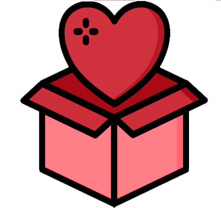

Queremos quebrar a linearidade
A Revolufabric quer incentivar modelos circulares e restaurativos de produção na industria fashion. O modelo atual de produção finaliza no ato da compra e quando as roupas são eventualmente descartadas, em sua grande maioria em aterro sanitário, elas passam a ser desprovidas de valor. Para nós, roupa descartada é matéria-prima valiosa! Pretendemos desse modo incentivar a logística reversa de artigos de vestuário, que alimenta nossa produção de fibras recicladas.
Mas por que reciclar roupas?
A industria têxtil é a segunda mais poluente do planeta! A fibra sintética requer 79 milhões de barris de petróleo por ano, além de demorar aproximadamente 200 anos para se decompor!. A viscose exige a derrubada de 70 milhões de árvores todos os anos. O algodão exige altas concentrações de substâncias tóxicas em seu cultivo: 25% de todos os inseticidas e 11% de todos os pesticidas, impactando solo e ambiente local
Ainda assim, o maior dano causado por essa industria é a tendência da moda rápida, ou fast fashion, que surgiu em meados dos anos 70 como uma jogada de mercado. Como o nome já implica, ao mesmo tempo que a produção é desenfreada, tem-se como consequencia alta taxa de descarte de materiais e alta emissão de carbono para a atmosfera, estimada em 400% mais se comparada a confecção de peças comuns
Foi estimado que no Brasil são produzidos cerca de 170 mil toneladas de descarte têxtil mas, mesmo assim, a reciclagem textil no Brasil ainda não é uma prática comum, indo tuuudo isso em sua grande maioria parar nos lixões... desperdício de matéria prima! =(
E é por isso que iniciativas como a nossa são necessárias!
Mas, claro, precisamos do apoio de vocês!
Como funciona?

Receberemos, seja por meio de retirada agendada em sua residência, nossos pontos oficiais de coleta ou entrega na nossa filial, qualquer roupa ou pedaço de tecido que você esteja querendo abrir mão, evitando assim que esse tecido possa eventualmente parar em aterro sanitario e ficar indisponível como matéria prima a ser utilizada!
A sua roupa será processada pelo nosso maquinário. Os fios desconexos da roupa desfibrilada passarão por uma transformação, que entrelaça os fios soltos, transformando em fios novos! Esses fios são transformados em tecido reciclado, a fonte de sustento de nossa ideia.
Através de nossa plataforma, seja você pessoa física ou juridica, será possível comprar o tecido reciclado feito à preço mínimo para manter a produção e fortalecer a ideia e, no processo, além das suas doações resultarem em descontos com as empresas parceiras, você poderá adquirir roupas que além de legais, são sustentáveis! \o/
Alguns de nossos produtos
Para ver a loja completa, é só se cadastrar! =)
Poliéster Reciclado
R$ 0,00/m
Nylon Reciclado
R$ 0,00/m
Algodão Reciclado
R$ 0,00/m
Faça parte da mudança
Cadastre-se agora e comece a mudar o mundo!
Marcas que apoiam essa ideia
Seja através de nossa iniciativa ou através de seus projetos pessoais, essas marcas também apoiam a renovação da industria fashion